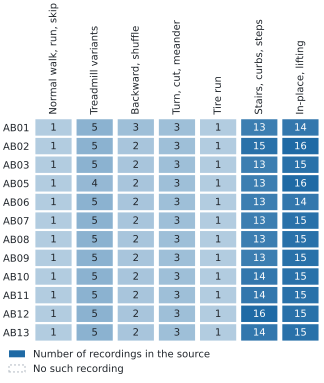
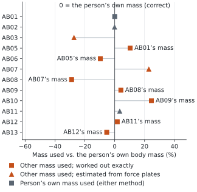
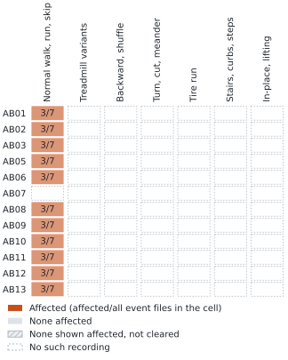
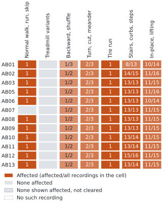
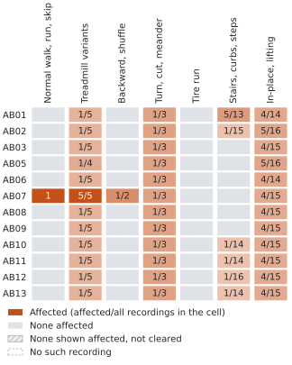
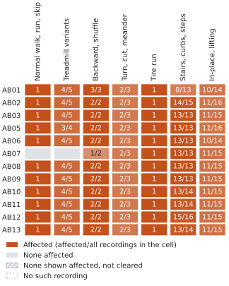
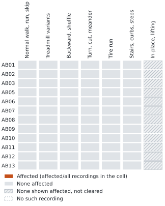
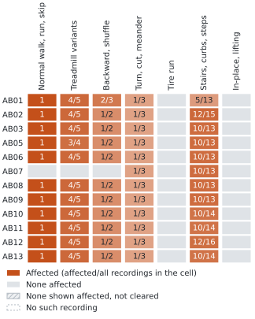

Georgia Tech 2023: known problems
Not reconverted and not released. Nothing on this page has been approved scientifically, and no fix on it has been applied to data.
What this is
Georgia Tech 2023 has 12 participants and 488 recordings of 26 tasks, each with 10 channel files (4,880 in all, 39.1 GB). The authors also supplied 787 event files that list 13,119 start and end times; 398 recordings have event windows and 90 have none. This page lists every problem we know, how much of the source each one touches, and what else it could affect.
Unlike the pages of datasets that were reconverted, this page says where each problem stands instead of what we did. Counts are measured against the source, and each card states what it counts. Example recordings are drawn at random with a recorded seed, not hand-picked.

Where a problem can stand
- Fixed in a checked pilot A fix was run on real data and independently checked. None of these problems is in this state yet.
- Decided by José, fix not yet run A person decided what to do. The fix has not been run on data.
- Open, fix not yet run A fix is known and has not been run; no decision is needed.
- Open, needs a decision A choice about conventions or scope is still needed.
- Documented only, kept as published No fix is planned. The published values are kept and the problem is written down.
At a glance
| Problem | Where it stands | How much |
|---|---|---|
| Per-kg moments and powers were divided by another participant's body mass | Decided by José, fix not yet run | 52 of 488 recordings shown; 434 cannot be told or only probably |
| The README says moments are in N·m and powers in W, but the data are per kg | Documented only, kept as published | All 488 recordings; the check covered 5 participants |
| Forces in body weights use the wrong mass for AB03 | Open, fix not yet run | AB03: 40 of 488 recordings |
| Horizontal ground force is labelled forward and sideways, but is in lab axes | Open, fix not yet run | 398 of 488 recordings that the converters export |
| Some tasks have no single forward direction | Decided by José, fix not yet run | 15 of 26 tasks; 241 of 488 recordings |
| The pressure point's origin is the heel bone, not a point 100 mm forward of the ankle centre | Decided by José, fix not yet run | 398 of 488 recordings that the converters export |
| The source's knee sign is opposite to LocoHub's | Decided by José, fix not yet run | All 488 recordings; checked in 20 |
| Pelvis, thigh and shank angles are not in the source | Decided by José, fix not yet run | All 488 recordings |
| The README and the paper describe joint speed differently | Documented only, kept as published | All 488 recordings |
| Running and skipping files are labelled as level walking | Open, fix not yet run | 33 of 77 normal-walk event files |
| The phase export drops the second leg's steps | Open, fix not yet run | 4,948 of 13,119 event windows |
| 90 recordings have no event windows, so neither converter exports them | Decided by José, fix not yet run | 90 of 488 recordings |
| The time export merges all of a file's events into one window | Open, fix not yet run | 778 windows made from 13,119 event windows |
| A backup segmentation could replace the source's events | Open, fix not yet run | 0 known; 57 recordings could be exposed |
| Many walking files have events for one leg only | Documented only, kept as published | 201 of 778 event files |
| The README and the authors' own code disagree on a few tasks | Documented only, kept as published | 25 of 488 recordings in 3 places |
| The converter wrote stair, curb and step heights nobody measured | Open, fix not yet run | 160 of 488 recordings |
| One recording has transform tables too large for the current limits | Open, fix not yet run | 1 of 488 recordings; 7 event files |
| Nothing has been reconverted from the full source yet | Open, fix not yet run | All 488 recordings, 4,880 channel files |
The problems
One card per problem. Each card says what is wrong, where it stands, how much of the source it touches, and what else it could affect. A verdict is given only where there is evidence; otherwise it says not checked.
Mass and units
Per-kg moments and powers were divided by another participant's body mass
Decided by José, fix not yet run
What is wrong. For 9 of 12 participants, the authors did not use the person's own body mass to turn moments and powers into per-kg values in level walking. For 7 of them the mass used is exactly another participant's listed body mass, and it can change between recordings of the same person.
How we know. The source gives some recordings in newton-metres as well as per kg. Dividing one by the other gives the mass that was used. Where that was not possible, the mass was estimated from force-plate moments.
Where it stands. Decided by José on 23 November 2026, replacing his 2 November decision of no rescaling: fix the 52 recordings shown to carry another mass. Their moments and powers get rescaled to the person's own mass (multiplied by the mass used divided by the own mass). The other 436 recordings, where the mass used cannot be told, stay as published, with a note. Fix not yet run. The 52 are the recordings where rescaling lowers the error in every plausible case: 7 have the mass used worked out exactly and 45 have it estimated from force plates. José confirmed on 23 November 2026 that all 52 are rescaled. Needs: the mass used for each recording (exact for 7, estimated for the rest, both in the audit files) and the person's own mass from the source's participant table. Not checked: any rescaled output.
Which mass was used for each participant in level walking?

Example. AB10, turn and step 1: the person's own mass is 67.5 kg, but force-plate moments point to about 83 kg being used. Published error against the person's own mass is 22 to 25%. This recording was drawn at random from the 45 shown recordings with a validated walking estimate.
How much was affected
52 of 488 recordings (10.7%) are shown to carry another mass; 15 more (3.1%) probably do; 2 are confirmed to use the person's own mass; 419 cannot be told. In level walking, 9 of 12 participants are affected.
Recordings are the source's 488 recordings from 12 participants. In level walking the affected per-kg values are 0.80 to 1.41 times the value for the person's own mass. Sample counts were not part of these checks.

Show all 12 rows
| Participant | Own mass (kg) | Mass used in level walking (kg) | How it was found | Published per-kg value relative to the own-mass value |
|---|---|---|---|---|
| AB01 | 78.9 | own mass | worked out exactly | 1.00 |
| AB02 | 82.2 | own mass (cannot be told apart from another mass) | estimated from force plates | 1.00 |
| AB03 | 113.5 | about 83 | estimated from force plates | 1.38 |
| AB05 | 71.5 | 78.9 (AB01's mass) | worked out exactly | 0.91 |
| AB06 | 79.1 | 71.5 (AB05's mass) | worked out exactly | 1.11 |
| AB07 | 62.3 | about 77 | estimated from force plates | 0.81 |
| AB08 | 87.6 | 62.3 (AB07's mass) | worked out exactly | 1.41 |
| AB09 | 84.1 | 87.6 (AB08's mass) | worked out exactly | 0.96 |
| AB10 | 67.5 | 84.1 (AB09's mass) | worked out exactly | 0.80 |
| AB11 | 65.1 | own mass (cannot be told apart from another mass) | estimated from force plates | 0.97 |
| AB12 | 64.0 | 65.1 (AB11's mass) | worked out exactly | 0.98 |
| AB13 | 67.6 | 64.0 (AB12's mass) | worked out exactly | 1.06 |
What else this could affect
A wrong mass changes per-kg moments and powers. It does not change angles, forces or the pressure point.
- Also wrong, not fixed Hip, knee and ankle moments (per kg). In the 52 shown recordings they are off by the factors above; they are to be rescaled to the own mass (decided, not yet run). How we know: In 8 level-walking recordings, moments recomputed in newton-metres match the published per-kg moments times one constant (correlation 1.0); the constant is another participant's mass in 7 of them.
- Also wrong, not fixed Hip, knee and ankle powers (per kg). Power carries the same mass, so it is off by the same factor in the same recordings. How we know: Published power equals the filtered moment times joint speed (ratio 1.0000, correlation 1.0000 in 12 columns checked by a second person).
- Checked, not affected Joint angles and angle speeds. Mass divides only the moments, so angles do not change with it. How we know: Moments recomputed without any mass differ from the published ones only by one constant per recording, so the mass enters through that one number.
- Checked, not affected Ground forces and pressure point. They are not divided by this mass. How we know: Body masses from the force plates match the listed masses within 1% in all 12 participants.
- Not checked Moments and powers in the other recordings. 434 recordings are not shown to carry another mass: non-walking tasks, curbs, stairs and short recordings have no checked way to find the mass used, and 15 others only probably carry another mass. They are neither confirmed nor cleared.
The README says moments are in N·m and powers in W, but the data are per kg
Documented only, kept as published
What is wrong. The publisher's README lists joint moments in N·m and powers in W. The published values were already divided by body mass, so they are in N·m per kg and W per kg.
How we know. A moment rebuilt from the force plates in N·m is 64 to 90 times larger than the published ankle moment, which is a body mass. Joint power equals the published moment times joint speed (ratio 0.96 to 1.00).
Where it stands. Documented. LocoHub's converters copy the values and label them per kg, and do not divide by mass a second time, so the labels are already right. Nothing was changed in the data.
What if we trust the README and read the values as N·m?

Do the values match once we read them as per kg?

Example. AB01, incline walking 2, left leg: read as N·m, the published ankle moment is 1/64 to 1/90 of the force-plate moment, in all 8 sampled legs (98 to 99% too small).
How much was affected
All 488 recordings (100%) carry the README's wrong unit text. The check measured 5 participants (25 channel files, 8 legs) and found the same result in all.
The README applies to every recording. The units check itself sampled 5 of 12 participants; the other 7 are covered by the README text only. Sample counts do not apply.

Show all 12 rows
| Participant | Recordings in the source | Affected | Could not be told |
|---|---|---|---|
| AB01 | 40 | 40 (100.0%) | 0 |
| AB02 | 43 | 43 (100.0%) | 0 |
| AB03 | 40 | 40 (100.0%) | 0 |
| AB05 | 40 | 40 (100.0%) | 0 |
| AB06 | 39 | 39 (100.0%) | 0 |
| AB07 | 40 | 40 (100.0%) | 0 |
| AB08 | 40 | 40 (100.0%) | 0 |
| AB09 | 40 | 40 (100.0%) | 0 |
| AB10 | 41 | 41 (100.0%) | 0 |
| AB11 | 41 | 41 (100.0%) | 0 |
| AB12 | 43 | 43 (100.0%) | 0 |
| AB13 | 41 | 41 (100.0%) | 0 |
What else this could affect
Wrong unit text would make every moment and power 64 to 90 times too small for anyone who trusts it. Angles and forces are not in these units.
- Checked, not affected Moments (per kg). LocoHub labels them N·m per kg and does not divide again. How we know: Both current converters copy the values as per kg.
- Checked, not affected Powers (per kg). Labelled W per kg for the same reason. How we know: Power equals moment times joint speed, ratio 0.96 to 1.00 in the checked legs.
- Checked, not affected Ground forces. The unit text does not touch forces. How we know: Force-plate body mass matches the README mass in 5 of 5 checked participants.
- Not checked The authors' filtered and processed moment and power files. Only 3 recordings were compared with the raw moments and they match; the filtered and power files were not compared.
Forces in body weights use the wrong mass for AB03
Open, fix not yet run
What is wrong. Both converters take the body mass for body-weight forces from a local table that was rewritten from the body models. For AB03 it says 82.18 kg, but the publisher's table and the force plates say about 113.5 kg. The other participants in the table differ by rounding only (below 0.1%).
How we know. The publisher's mass table and the local table were compared. In the force-plate check, AB03's body mass came out near 114 kg, not 82.
Where it stands. Open. The supported correction is to use the publisher's table. No data have been converted with it yet.
Example. AB03 forces divided by 82.18 kg instead of 113.5 kg come out 1.38 times too large in body weights.
How much was affected
40 of 488 recordings (8.2%) from 1 of 12 participants: every AB03 recording would get forces in body weights that are 38% too large.
Recordings in the source (488). Sample counts do not apply: this is a conversion setting, and no AB03 recording was converted with the corrected table.

Show all 12 rows
| Participant | Recordings in the source | Affected | Could not be told |
|---|---|---|---|
| AB01 | 40 | 0 (0.0%) | 0 |
| AB02 | 43 | 0 (0.0%) | 0 |
| AB03 | 40 | 40 (100.0%) | 0 |
| AB05 | 40 | 0 (0.0%) | 0 |
| AB06 | 39 | 0 (0.0%) | 0 |
| AB07 | 40 | 0 (0.0%) | 0 |
| AB08 | 40 | 0 (0.0%) | 0 |
| AB09 | 40 | 0 (0.0%) | 0 |
| AB10 | 41 | 0 (0.0%) | 0 |
| AB11 | 41 | 0 (0.0%) | 0 |
| AB12 | 43 | 0 (0.0%) | 0 |
| AB13 | 41 | 0 (0.0%) | 0 |
What else this could affect
Mass enters forces in body weights and per-kg moments and powers. Angles and the pressure point do not use it.
- Also wrong, not fixed Forces in body weights (up, forward, sideways). AB03's values would be 38% too large. Force in body weights goes down as the mass used goes up. How we know: Publisher mass table versus the local table, compared participant by participant.
- Checked, not affected Moments and powers. The converters read the mass table only for forces; they copy moments as published. How we know: Converter code was read, not run.
- Checked, not affected Pressure point and joint angles. Neither uses a body mass. How we know: The pressure point calculation uses only positions and the foot frame (code read, not run).
- Checked, not affected The other participants. Rounding only. How we know: The largest difference between the two tables is below 0.1%.
Forces and pressure point
Horizontal ground force is labelled forward and sideways, but is in lab axes
Open, fix not yet run
What is wrong. The converters write the force plates' horizontal force in lab directions straight into the forward and sideways columns. Lab directions turn with the person, so they are not forward and sideways unless the person walks along one lab axis.
How we know. The paper says the forces are in the lab frame. The converter code copies them without turning them by the person's facing direction.
Where it stands. Open. A correction tool exists that sets the four forward and sideways force columns to empty and keeps the original values under lab-axis names. It has been tested only on made-up data, not on real data, and has not been run.
Example. Walking in a straight line can keep one lab axis nearly fixed, so the error can hide there; a turn or a side shuffle shows it at once.
How much was affected
398 of 488 recordings (81.6%) have event windows and would be exported with the wrong labels; the other 90 are never exported by either converter.
Recordings in the source (488). Samples were not counted: nothing was converted for this review.

Show all 12 rows
| Participant | Recordings in the source | Affected | Could not be told |
|---|---|---|---|
| AB01 | 40 | 29 (72.5%) | 0 |
| AB02 | 43 | 35 (81.4%) | 0 |
| AB03 | 40 | 34 (85.0%) | 0 |
| AB05 | 40 | 33 (82.5%) | 0 |
| AB06 | 39 | 33 (84.6%) | 0 |
| AB07 | 40 | 28 (70.0%) | 0 |
| AB08 | 40 | 34 (85.0%) | 0 |
| AB09 | 40 | 34 (85.0%) | 0 |
| AB10 | 41 | 34 (82.9%) | 0 |
| AB11 | 41 | 34 (82.9%) | 0 |
| AB12 | 43 | 36 (83.7%) | 0 |
| AB13 | 41 | 34 (82.9%) | 0 |
What else this could affect
A wrong force direction changes the forward and sideways force and anything computed from it, such as braking and push-off. It does not change up-down force, angles, or the moments the authors published.
- Also wrong, not fixed Forward and sideways force, both legs. Lab-axis values are labelled forward and sideways. How we know: Paper's frame description and the converter code, both read.
- Checked, not affected Up-down force. Up is a lab axis and positive means support. How we know: Force-plate body mass matches the README mass in 5 of 5 checked participants.
- Checked, not affected Pressure point. It comes from a different calculation, in the foot's own frame. It has its own card. How we know: Converter code read, not run.
- Checked, not affected Published moments and powers. The authors computed them in the lab frame, so the labelling does not change them. How we know: A moment rebuilt from the plates in the lab frame matches the published ankle moment (correlation 0.9975 to 0.9998).
- Not checked Forward force after turning it by the facing direction. Braking and push-off looked right in level, incline and decline walking for 3 participants. Stairs and all other tasks were not checked, and nothing has been run on real converted data.
Some tasks have no single forward direction
Decided by José, fix not yet run
What is wrong. Our rule says forward means the walking direction. In 15 of the 26 tasks the person does not walk forward in one direction: backward walking, side shuffle, squats, sit-to-stand, lifting, jumps, lunges, turns, cutting and meandering.
How we know. The authors' task descriptions were read, and the heading of the pelvis during each window was reviewed; only the 11 forward-walking tasks have a steady heading that matches the direction of travel.
Where it stands. Decided: José asked us to choose, and we took the smallest change. Forward and sideways force and pressure point are filled only for the 11 forward-walking tasks, from the measured facing direction. The other 15 tasks keep lab-axis values only. Not yet run.
Example. One of the 15, drawn at random: twister. Its horizontal force stays in lab axes.
How much was affected
15 of 26 tasks (57.7%) and 241 of 488 recordings (49.4%) keep lab-axis horizontal force and pressure point only.
Tasks are the publisher's 26 base tasks; recordings are the source's 488. Samples were not counted.

Show all 15 rows
| Task | Recordings affected | Recordings of this task |
|---|---|---|
| ball toss | 12 | 12 |
| cutting | 12 | 12 |
| jump | 33 | 33 |
| lift weight | 24 | 24 |
| lunges | 24 | 24 |
| meander | 12 | 12 |
| poses | 12 | 12 |
| push | 12 | 12 |
| side shuffle | 12 | 12 |
| sit to stand | 26 | 26 |
| squats | 13 | 13 |
| tug of war | 12 | 12 |
| turn and step | 12 | 12 |
| twister | 12 | 12 |
| walk backward | 13 | 13 |
What else this could affect
This decision changes only the forward and sideways force and pressure point. Up-down force and angles are not touched.
- Left out Forward and sideways force in the 15 tasks. Not filled; the lab-axis values are kept under lab-axis names. How we know: The decision, recorded with the options that were weighed.
- Left out Forward and sideways pressure point in the 15 tasks. Not filled for the same reason. How we know: The decision, as above.
- Checked, not affected Up-down force and joint angles. Neither needs a forward direction. How we know: Up-down force is a lab axis; joint angles are joint coordinates, not force data.
- Not checked Forward walking: stairs and curbs. The checks of braking, push-off and pressure-point progression gave no answer on stairs, so the facing direction there is not confirmed.
- Not checked Forward walking: everything beyond level, incline and decline. Facing direction was measured and checked only in 3 participants on level, incline and decline walking.
The pressure point's origin is the heel bone, not a point 100 mm forward of the ankle centre
Decided by José, fix not yet run
What is wrong. The converters give the centre of pressure (where the force acts on the foot) in a frame attached to the heel bone, which turns with the foot. The origin is the heel-bone frame origin, not the ankle as a code comment says. LocoHub's data reference now says the frame turns with the foot and its origin is 100 mm forward of the ankle joint centre along the heel-to-toe direction.
How we know. The calculation was read: the pressure point in the lab is turned into the foot frame using the foot's position and orientation, with no ankle offset.
Where it stands. Decided by José on 23 November 2026: the pressure point is given in a frame that turns with the foot, with its origin 100 mm forward of the ankle centre along the foot's heel-to-toe direction. Fix not yet run. Needs: the ankle centre and the foot's orientation. The converters already use the heel bone's position and orientation, and the mass audit located the ankle centre in the heel-bone frame for the recordings it checked. Whether the ankle centre and heel-to-toe direction are available for every recording: not checked.
Example. Moving the origin from the heel-bone frame origin to a point 100 mm forward of the ankle centre shifts every forward and up value by a fixed amount in the foot frame. The size of that shift was not measured.
How much was affected
398 of 488 recordings (81.6%) have a pressure point in the foot frame; the other 90 are never exported.
Recordings in the source (488). Samples were not counted.

Show all 12 rows
| Participant | Recordings in the source | Affected | Could not be told |
|---|---|---|---|
| AB01 | 40 | 29 (72.5%) | 0 |
| AB02 | 43 | 35 (81.4%) | 0 |
| AB03 | 40 | 34 (85.0%) | 0 |
| AB05 | 40 | 33 (82.5%) | 0 |
| AB06 | 39 | 33 (84.6%) | 0 |
| AB07 | 40 | 28 (70.0%) | 0 |
| AB08 | 40 | 34 (85.0%) | 0 |
| AB09 | 40 | 34 (85.0%) | 0 |
| AB10 | 41 | 34 (82.9%) | 0 |
| AB11 | 41 | 34 (82.9%) | 0 |
| AB12 | 43 | 36 (83.7%) | 0 |
| AB13 | 41 | 34 (82.9%) | 0 |
What else this could affect
An origin error shifts every pressure-point value by a fixed amount in the foot frame, and affects anything computed from it, such as moments about the ankle or how the pressure point moves along the foot. It does not change the force itself.
- Also wrong, not fixed Forward, up and sideways pressure point. Values use the heel-bone origin, while the reference uses a point 100 mm forward of the ankle centre. How we know: The calculation was read in both converters.
- Checked, not affected Published moments. The authors computed them from the plates and joint centres, not from the converters' pressure point. How we know: A moment rebuilt from plate force and position in the lab frame matches the published ankle moment (correlation 0.9975 to 0.9998).
- Checked, not affected Ground forces. Forces are separate columns and the frame change does not touch them. How we know: Converter code read, not run.
- Not checked Checks that use how the pressure point moves along the foot. Only run in 3 participants on walking and stairs; stairs gave no answer.
Joint signs and angles
The source's knee sign is opposite to LocoHub's
Decided by José, fix not yet run
What is wrong. The authors' plotting code and paper show hip and knee in the extension-positive direction for the segmented data, and the ankle in the dorsiflexion-positive direction. LocoHub's rule needs flexion positive for hip and knee. The knee therefore needs its sign flipped, in angle, speed and moment; hip and ankle stay as they are.
How we know. The authors' plotting code was read for its sign changes and the paper's description of the plots. The sign detector was then run on 3 participants.
Where it stands. Decided: José chose the rule that the named direction is positive, and this recipe follows it. It has not been applied to the data. It was reproduced from the data only for walking, inclines, declines and stairs in 3 participants.
Example. AB01, AB06 and AB13 were checked on level, incline, decline and stair walking: the detector gave a sign for 141 of 180 channel checks and none was wrong; for 39 it gave no answer.
How much was affected
All 488 recordings (100%) need the knee flip. 20 recordings (4.1%) were checked on real data: 141 of 180 channel checks right, 0 wrong, 39 no answer.
Recordings in the source (488). The checks counted 20 recordings and 180 channel checks (hip, knee and ankle angle, moment and power). Samples were not counted.

Show all 12 rows
| Participant | Recordings in the source | Affected | Could not be told |
|---|---|---|---|
| AB01 | 40 | 40 (100.0%) | 0 |
| AB02 | 43 | 43 (100.0%) | 0 |
| AB03 | 40 | 40 (100.0%) | 0 |
| AB05 | 40 | 40 (100.0%) | 0 |
| AB06 | 39 | 39 (100.0%) | 0 |
| AB07 | 40 | 40 (100.0%) | 0 |
| AB08 | 40 | 40 (100.0%) | 0 |
| AB09 | 40 | 40 (100.0%) | 0 |
| AB10 | 41 | 41 (100.0%) | 0 |
| AB11 | 41 | 41 (100.0%) | 0 |
| AB12 | 43 | 43 (100.0%) | 0 |
| AB13 | 41 | 41 (100.0%) | 0 |
What else this could affect
Flipping the knee changes knee angle, speed and moment together. Power keeps its sign. Hip and ankle are not touched.
- Also wrong, not fixed Knee angle, knee speed and knee moment. The sign is opposite to LocoHub's until the flip is applied. How we know: Author plotting code and paper, plus 19 of 20 knee-angle and 18 of 20 knee-moment channel checks right in the pilot; the rest gave no answer.
- Checked, not affected Hip and ankle angle, speed and moment. They already have the LocoHub sign. How we know: Pilot: hip angle 20 of 20, ankle angle 20 of 20, ankle moment 20 of 20 and hip moment 17 of 20 checked right; none wrong.
- Not checked Powers. Power keeps its sign when moment and speed flip together. The pilot could judge ankle power in 17 of 20, hip power in 10 of 20 and knee power in none of 20.
- Not checked Tasks other than walking and stairs. Signs are supported by the source for all tasks but were reproduced from data only for walking, incline, decline and stairs.
- Not checked Hip sideways motion, hip rotation and the subtalar joint. No sign rule has been adopted and the plotting evidence does not cover them.
Pelvis, thigh and shank angles are not in the source
Decided by José, fix not yet run
What is wrong. The publisher gives joint angles (hip, knee, ankle) but no pelvis, thigh or shank angles. The local files that have them were made by our own earlier processing (a fixed turn order with a quarter-turn offset for the pelvis), which is not the publisher's definition.
How we know. All 7,038 entries in the publisher's archive were searched and none holds segment angles or segment speeds.
Where it stands. Decided by José on 23 November 2026: compute pelvis, thigh and shank angles as the data reference defines them (thigh and shank from straight down, pelvis from forward horizontal, all measured against gravity). Fix not yet run. Needs: the body segments' orientations. The local transform tables are said to allow pelvis tilt to be computed from them; whether every recording has them: not checked. Nothing is invented.
Example. Pelvis tilt for AB02's level walking could be computed from the local transform tables. Its sign and zero are now set by the data reference; no source value exists to check it against.
How much was affected
All 488 recordings (100%) lack publisher segment angles.
Recordings in the source (488). Seven AB02 windows also have oversized transform tables (see the oversized-table card).

Show all 12 rows
| Participant | Recordings in the source | Affected | Could not be told |
|---|---|---|---|
| AB01 | 40 | 40 (100.0%) | 0 |
| AB02 | 43 | 43 (100.0%) | 0 |
| AB03 | 40 | 40 (100.0%) | 0 |
| AB05 | 40 | 40 (100.0%) | 0 |
| AB06 | 39 | 39 (100.0%) | 0 |
| AB07 | 40 | 40 (100.0%) | 0 |
| AB08 | 40 | 40 (100.0%) | 0 |
| AB09 | 40 | 40 (100.0%) | 0 |
| AB10 | 41 | 41 (100.0%) | 0 |
| AB11 | 41 | 41 (100.0%) | 0 |
| AB12 | 43 | 43 (100.0%) | 0 |
| AB13 | 41 | 41 (100.0%) | 0 |
What else this could affect
Missing segment angles only remove those columns. Joint angles and forces do not depend on them.
- Left out Pelvis, thigh and shank angles and speeds. To be computed per the data reference; not yet run. How we know: Search of the publisher archive found no segment angle or speed files.
- Not checked Hip, knee and ankle angles. They come straight from the publisher's joint angle files. The reference now defines joint angles as differences of segment angles; whether the publisher's angles equal those differences is not checked.
- Checked, not affected Facing direction used to turn forces. It is measured from pelvis markers, not from these angles. How we know: The sign-detector pilot measured it from markers on the front and back of the pelvis.
The README and the paper describe joint speed differently
Documented only, kept as published
What is wrong. The README says joint speed is a one-step backward difference of the angle. The paper says the angles were filtered and differentiated with a centred difference. Both cannot be right.
How we know. The README text, the paper's methods and the authors' code were compared.
Where it stands. Documented, kept as published. The published speeds are copied unchanged. No recomputation recipe is claimed, and no speed was replaced to match a preferred shape.
Example. Which difference was used decides how smooth the speed looks near fast changes, such as heel strike.
How much was affected
All 488 recordings (100%) carry joint speeds with an unconfirmed recipe.
Recordings in the source (488). Samples were not counted.

Show all 12 rows
| Participant | Recordings in the source | Affected | Could not be told |
|---|---|---|---|
| AB01 | 40 | 40 (100.0%) | 0 |
| AB02 | 43 | 43 (100.0%) | 0 |
| AB03 | 40 | 40 (100.0%) | 0 |
| AB05 | 40 | 40 (100.0%) | 0 |
| AB06 | 39 | 39 (100.0%) | 0 |
| AB07 | 40 | 40 (100.0%) | 0 |
| AB08 | 40 | 40 (100.0%) | 0 |
| AB09 | 40 | 40 (100.0%) | 0 |
| AB10 | 41 | 41 (100.0%) | 0 |
| AB11 | 41 | 41 (100.0%) | 0 |
| AB12 | 43 | 43 (100.0%) | 0 |
| AB13 | 41 | 41 (100.0%) | 0 |
What else this could affect
Only joint speed, and anything recomputed from it, depends on the differencing method. Angles and forces do not.
- Checked, not affected Published joint speeds. Kept exactly as published. How we know: Values are copied by the converters; none replaced.
- Checked, not affected Published powers. Power matches the published moment times the published speed. How we know: Ratio 0.96 to 1.005 in the 5 participants of the units check.
- Not checked Speeds recomputed from angles. A recomputation would need the right recipe, which is not established.
Events and task labels
Running and skipping files are labelled as level walking
Open, fix not yet run
What is wrong. LocoHub's converter labels every normal-walk file as level walking. The authors group the 2.0 and 2.5 m/s files as running and the skipping files as skipping.
How we know. The authors' grouping code, their plotting script and the paper's Table 1 all call the 2.0 and 2.5 m/s files running.
Where it stands. Open, fix not yet run. LocoHub will relabel them to follow the authors' grouping. Only labels change; values are unchanged. The mistake is in LocoHub's converter, not in the source.
How many normal-walk files are really running or skipping?

Example. AB05: 3 of its 7 normal-walk event files would be relabelled (running at 2.0 and 2.5 m/s, and skipping). AB05 was drawn at random.
How much was affected
33 of 77 event files (42.9%) carry the wrong task label: 22 running and 11 skipping. They come from 11 of 12 participants; 4 of the running files hold no events.
The unit is event files (the authors' start and end times, one file per condition and recording): 77 normal-walk files in 12 recordings. Windows and samples were not counted per file.

Show all 12 rows
| Participant | Event files in the source | Affected | Could not be told |
|---|---|---|---|
| AB01 | 7 | 3 (42.9%) | 0 |
| AB02 | 7 | 3 (42.9%) | 0 |
| AB03 | 7 | 3 (42.9%) | 0 |
| AB05 | 7 | 3 (42.9%) | 0 |
| AB06 | 7 | 3 (42.9%) | 0 |
| AB07 | 0 | none | 0 |
| AB08 | 7 | 3 (42.9%) | 0 |
| AB09 | 7 | 3 (42.9%) | 0 |
| AB10 | 7 | 3 (42.9%) | 0 |
| AB11 | 7 | 3 (42.9%) | 0 |
| AB12 | 7 | 3 (42.9%) | 0 |
| AB13 | 7 | 3 (42.9%) | 0 |
What else this could affect
A wrong task label changes how strides are grouped. It does not change any measured value.
- Also wrong, not fixed Grouping of strides by task. Running and skipping strides would be pooled with level walking and change its averages. How we know: Authors' grouping, plotting script and paper Table 1.
- Checked, not affected Signal values (angles, forces, moments). Only the label is wrong; values do not change. How we know: The problem is in the converter's label step.
- Left out Running files of AB05 and AB10. Four running files have no events at all; the README says there are no valid running trials for them. How we know: Event file sizes inspected; README text.
- Not checked Right-leg events in running files. The README says the right plate is missing, yet the running files hold both legs; where the right-leg events came from is not checked.
- Not checked Labels of the other 25 tasks. Only the normal-walk labels were audited.
The phase export drops the second leg's steps
Open, fix not yet run
What is wrong. For each task the phase converter keeps only the leg with more event windows and drops the other leg's. The dropped windows include running and stairs steps and hop contacts.
How we know. The converter code was read and the kept and dropped counts were recomputed from the authors' event files, task by task.
Where it stands. Open, fix not yet run. The fix is to export each leg's windows with its own side. Update, 23 November 2026: José decided that LocoHub segments every recording itself and checks against the authors' labelled strides, so event windows are expected to come from our scripts instead; not yet run.
How many event windows does each kind of task lose?

Example. lift weight, drawn at random from the tasks that lose windows: 570 windows dropped, 570 kept.
How much was affected
4,948 of 13,119 event windows (37.7%) never reach the phase export, in 15 of 26 tasks, which hold 343 of 488 recordings (70.3%). That includes 498 single-leg gait cycles (running and stairs) and 127 hop contacts.
The unit is event windows: 13,119 in all 787 event files of the source (7,721 left, 5,398 right). The grid counts recordings that have windows in tasks that lose some; the per-participant split of dropped windows was not read (it needs a guarded job). Samples were not counted.

Show all 15 rows
| Task | Windows kept | Windows dropped |
|---|---|---|
| ball toss | 183 | 183 |
| curb down | 135 | 135 |
| curb up | 129 | 129 |
| cutting | 248 | 248 |
| jump | 921 | 919 |
| lift weight | 570 | 570 |
| lunges | 368 | 368 |
| normal walk | 1,246 | 349 |
| side shuffle | 150 | 150 |
| sit to stand | 1,199 | 1,199 |
| squats | 130 | 130 |
| stairs | 194 | 149 |
| step ups | 224 | 224 |
| tire run | 123 | 123 |
| turn and step | 120 | 72 |
What else this could affect
Dropped windows change stride counts and which leg is represented. They do not change the values inside kept windows.
- Also wrong, not fixed Stride counts and averages in the phase export. One leg is missing in the affected tasks, so counts are lower and averages use one leg only. How we know: Kept and dropped windows recomputed from the event files.
- Checked, not affected The time-based export. It does not drop legs; it has its own merging problem. How we know: Converter code read.
- Checked, not affected Signal values inside the windows that are kept. Nothing is altered; whole windows are dropped. How we know: Converter code read.
- Not checked Which leg counts as the same side in whole-body windows. Whether the left and right windows are identical for whole-body tasks was not read; if they are, the kept side is arbitrary. This needs a guarded job.
90 recordings have no event windows, so neither converter exports them
Decided by José, fix not yet run
What is wrong. The converters make their windows from the authors' event files. 90 recordings have none: 85 have no event file and 5 (AB01 stair descents) have only empty ones. The README says some AB07 treadmill trials were removed because they had no forward-back force.
How we know. The event file names and sizes were matched to every recording, and the counts agree with the full source listing.
Where it stands. Decided by José on 23 November 2026: LocoHub segments every recording itself, including these 90, with its own segmentation scripts, and checks the result against the authors' labelled strides. Fix not yet run. Needs: our segmentation run on these recordings. Whether it works on all tasks, and how closely it matches the authors' labelled strides: not checked.
Example. One of the affected tasks, drawn at random: incline walk.
How much was affected
90 of 488 recordings (18.4%) have no event window and are never exported.
Recordings in the source (488). The source files for all of them exist. Samples were not counted.

Show all 15 rows
| Task | Recordings affected | Recordings of this task |
|---|---|---|
| dynamic walk | 1 | 12 |
| incline walk | 2 | 24 |
| jump | 2 | 33 |
| meander | 12 | 12 |
| normal walk | 1 | 12 |
| obstacle walk | 12 | 12 |
| poses | 12 | 12 |
| push | 12 | 12 |
| stairs | 5 | 124 |
| start stop | 4 | 4 |
| step ups | 1 | 12 |
| tug of war | 12 | 12 |
| twister | 12 | 12 |
| walk backward | 1 | 13 |
| weighted walk | 1 | 11 |
What else this could affect
Without a window, a recording is simply missing from the output; nothing already exported changes.
- Left out All signals in these 90 recordings. Never exported by either converter, so no standard column exists for them. How we know: Converter code read; the full source listing lists their channel files.
- Also wrong, not fixed Which tasks a participant did. Converted data would look as if these tasks were never recorded. How we know: Listing of the source recordings against the event files.
- Checked, not affected Their source files. All ten channel files exist for every one of them. How we know: The full source listing agrees with the publisher's archive.
- Not checked Quality of the AB07 treadmill trials. The README says they were removed for missing force; they are still in the source and were not examined.
The time export merges all of a file's events into one window
Open, fix not yet run
What is wrong. The time-based converter makes one window per event file, from the earliest start to the latest end of every field in it. Files that hold several conditions (such as sitting and standing, or forward and backward) become one window that includes the time between them. The reference leg is simply the first start.
How we know. The converter code was read, and its window count was compared with the authors' counts.
Where it stands. Open, fix not yet run. The fix is one window per source interval, labelled by its field. Update, 23 November 2026: José decided that LocoHub segments every recording itself and checks against the authors' labelled strides, so event windows are expected to come from our scripts instead; not yet run.
Example. The source holds 13,119 event windows in 778 non-empty files; the converter writes 778 windows.
How much was affected
778 windows replace 13,119 event windows; 398 of 488 recordings (81.6%) are exported this way.
The unit is windows: 13,119 source windows in 778 non-empty event files. How many files hold several conditions was not counted (it needs a guarded job). Samples were not counted.

Show all 12 rows
| Participant | Recordings in the source | Affected | Could not be told |
|---|---|---|---|
| AB01 | 40 | 29 (72.5%) | 0 |
| AB02 | 43 | 35 (81.4%) | 0 |
| AB03 | 40 | 34 (85.0%) | 0 |
| AB05 | 40 | 33 (82.5%) | 0 |
| AB06 | 39 | 33 (84.6%) | 0 |
| AB07 | 40 | 28 (70.0%) | 0 |
| AB08 | 40 | 34 (85.0%) | 0 |
| AB09 | 40 | 34 (85.0%) | 0 |
| AB10 | 41 | 34 (82.9%) | 0 |
| AB11 | 41 | 34 (82.9%) | 0 |
| AB12 | 43 | 36 (83.7%) | 0 |
| AB13 | 41 | 34 (82.9%) | 0 |
What else this could affect
Merged windows change what is inside each window. They do not change signal values.
- Also wrong, not fixed Window contents. A merged window can include rest between conditions. How we know: Converter code read: it takes the earliest start and the latest end over every field.
- Also wrong, not fixed Reference leg. It is the first start, not a measured choice. How we know: Converter code read.
- Checked, not affected Signal values. Only the window edges are affected; values are copied. How we know: Converter code read.
- Not checked How many windows really mix conditions. Not counted: it needs reading the event files one by one, which is a guarded job.
A backup segmentation could replace the source's events
Open, fix not yet run
What is wrong. When an event file lacks left and right fields, the phase converter replaces the source events with its own segmentation using fixed force thresholds (600 and 400 N). Any output made that way is not source-defined.
How we know. The converter code was read, and every sit-to-stand and jump event file was found to have source fields, so the backup should never run.
Where it stands. Open, fix not yet run. The fix is to remove the backup so the converter stops instead. Update, 23 November 2026: José decided that LocoHub segments every recording itself and checks against the authors' labelled strides, so event windows are expected to come from our scripts instead; not yet run.
Example. A jump recording whose event file has no left or right field would be cut at a 600 N threshold instead of the authors' pelvis-speed windows.
How much was affected
0 of 488 recordings are known to be affected. 57 recordings in the two tasks that have a backup rule (11.7%) could be, and nobody has checked whether it ever ran.
Recordings in the source (488). Old converted files were not opened.

Show all 12 rows
| Participant | Recordings in the source | Affected | Could not be told |
|---|---|---|---|
| AB01 | 40 | 0 (0.0%) | 4 |
| AB02 | 43 | 0 (0.0%) | 5 |
| AB03 | 40 | 0 (0.0%) | 5 |
| AB05 | 40 | 0 (0.0%) | 4 |
| AB06 | 39 | 0 (0.0%) | 4 |
| AB07 | 40 | 0 (0.0%) | 5 |
| AB08 | 40 | 0 (0.0%) | 5 |
| AB09 | 40 | 0 (0.0%) | 5 |
| AB10 | 41 | 0 (0.0%) | 5 |
| AB11 | 41 | 0 (0.0%) | 5 |
| AB12 | 43 | 0 (0.0%) | 5 |
| AB13 | 41 | 0 (0.0%) | 5 |
What else this could affect
Only the window edges of these two tasks could have been affected; signal values inside are untouched.
- Not checked Any old output made with the backup. Whether the backup ever ran was not checked; it needs reading old converted files, which is a guarded job.
- Checked, not affected Source event windows in these tasks. Every file has source fields, so the source rule applies. How we know: Field inventory of the authors' event files.
Many walking files have events for one leg only
Documented only, kept as published
What is wrong. On the treadmill the right plate was missing for many trials. Incline files carry left-leg events only, decline files right-leg only, and several walking tasks have one leg only.
How we know. The authors' event files were counted field by field, and the README notes about the missing plate were read.
Where it stands. Documented, kept as published. Nothing is invented for the missing leg. Update, 23 November 2026: José decided that LocoHub segments every recording itself and checks against the authors' labelled strides, so event windows are expected to come from our scripts instead; not yet run.
Example. Drawn at random from the 7 tasks with such files: dynamic walk.
How much was affected
201 of 778 non-empty event files (25.8%) hold events for one leg only, in 7 tasks. 197 of 488 recordings (40.4%) are in those tasks.
The unit is event files (778 non-empty, of 787). The grid counts recordings in tasks where at least one file has one leg only, which is more than the recordings that really do. Samples were not counted.

| Task | Recordings affected | Recordings of this task |
|---|---|---|
| dynamic walk | 11 | 12 |
| incline walk | 22 | 24 |
| normal walk | 11 | 12 |
| stairs | 119 | 124 |
| turn and step | 12 | 12 |
| walk backward | 12 | 13 |
| weighted walk | 10 | 11 |
What else this could affect
A missing plate removes force-based values for that leg. Whether it also removes angles was not checked.
- Not checked Forces, moments and powers of the missing leg. The paper says inverse dynamics is empty off the plates, but whether the missing leg's columns are empty in the files was not checked; it needs reading channel files.
- Left out Strides of the missing leg. No events exist for them, so none can be exported. How we know: Event file field inventory.
- Also wrong, not fixed Left-right comparisons. Cannot be made in these tasks. How we know: Field inventory shows one leg only.
- Not checked Joint angles of both legs. Angles come from motion capture, not plates, but this was not checked per file.
The README and the authors' own code disagree on a few tasks
Documented only, kept as published
What is wrong. Turn-and-step events: the README implies pelvis-speed windows, but the authors' plotting code titles them as cut at toe-off, and left and right counts differ inside files. Weighted walk: the README says 1.0 m/s, the plotting code says 1.25 m/s. AB02's curb files: the file name says one leg but the fields hold the other.
How we know. The README, the plotting script and the event files were compared line by line.
Where it stands. Documented, kept as published. None of the three is resolved, so nothing was changed.
Example. Weighted walking is 11 recordings whose speed is either 1.0 or 1.25 m/s depending on the source you trust.
How much was affected
25 of 488 recordings (5.1%): 12 turn-and-step, 11 weighted walk and 2 AB02 curb recordings.
Recordings in the source (488). Samples were not counted.

| Disagreement | Recordings | What differs |
|---|---|---|
| Turn and step: how events are cut | 12 | README versus plotting code titles |
| Weighted walk speed | 11 | 1.0 versus 1.25 m/s |
| AB02 curb files | 2 | File name versus the leg in the fields |
What else this could affect
A wrong description changes grouping and labels, not signal values.
- Not checked Event times in turn and step. Which definition applies is open.
- Not checked Speed-based grouping of weighted walking. The true speed is open.
- Not checked Left and right in AB02's curb recordings. They may be swapped; unresolved.
- Checked, not affected Signal values in these recordings. None were changed; the disagreement is about descriptions and event definitions. How we know: Nothing in these recordings was edited.
Task details and source limits
The converter wrote stair, curb and step heights nobody measured
Open, fix not yet run
What is wrong. The converter writes a stair height of 0.15 m (the paper says 152 mm), calls the pass number a step number, and writes 0.15 m for curbs and 0.20 m for step-ups. The curb and step-up heights are not in any local source.
How we know. The converter's task-detail code was compared with the paper's Table 1. The paper's supplementary protocol table is not available locally.
Where it stands. Open, fix not yet run. The fix is stair rise 0.152 m citing the paper, a renamed pass number, and no curb or step-up height unless a source gives one.
Example. Stairs at 0.15 m instead of 0.152 m is 1.3% off; the curb and step-up heights are unchecked.
How much was affected
160 of 488 recordings (32.8%): stairs, curbs and step-ups carry invented or rounded heights.
Recordings in the source (488). Samples do not apply: these are text fields.

| Task | Recordings affected | Recordings of this task |
|---|---|---|
| curb down | 12 | 12 |
| curb up | 12 | 12 |
| stairs | 124 | 124 |
| step ups | 12 | 12 |
What else this could affect
A wrong height affects analyses that use the height. Signals are not affected.
- Also wrong, not fixed Stair height. 0.15 m instead of 0.152 m, a 1.3% error. How we know: The paper's Table 1 gives a 152 mm rise; the converter code writes 0.15 m.
- Not checked Curb and step-up heights. The true heights are unknown locally.
- Checked, not affected Signal values. Only text fields are affected. How we know: The finding concerns the converter's task-detail fields.
One recording has transform tables too large for the current limits
Open, fix not yet run
What is wrong. All seven normal-walk event files of AB02 (one recording) point at a body-transform table whose uncompressed size is about 131 MiB, above the size limit the current tools accept.
How we know. The container was inspected without loading its arrays: its header and compressed parts were measured.
Where it stands. Open, needs a guarded job. The original is untouched. Until it is processed, these seven windows stay incomplete, not passing.
Example. AB02's normal walking at every speed, shuffle and skip falls under this one table.
How much was affected
1 of 488 recordings (0.2%), and 7 of 787 event files (0.9%).
Recordings in the source (488) and event files (787). Samples were not counted.

Show all 12 rows
| Participant | Recordings in the source | Affected | Could not be told |
|---|---|---|---|
| AB01 | 40 | 0 (0.0%) | 0 |
| AB02 | 43 | 1 (2.3%) | 0 |
| AB03 | 40 | 0 (0.0%) | 0 |
| AB05 | 40 | 0 (0.0%) | 0 |
| AB06 | 39 | 0 (0.0%) | 0 |
| AB07 | 40 | 0 (0.0%) | 0 |
| AB08 | 40 | 0 (0.0%) | 0 |
| AB09 | 40 | 0 (0.0%) | 0 |
| AB10 | 41 | 0 (0.0%) | 0 |
| AB11 | 41 | 0 (0.0%) | 0 |
| AB12 | 43 | 0 (0.0%) | 0 |
| AB13 | 41 | 0 (0.0%) | 0 |
What else this could affect
A missing transform table blocks the values that need it. Whether other values are fine was not checked.
- Not checked Foot-frame pressure point and any angle that needs the transform table. Cannot be produced for these windows until the table is read in a guarded job.
- Not checked Angles, forces and moments in the plain channel files for AB02 normal walking. Not examined; they are separate files.
Nothing has been reconverted from the full source yet
Open, fix not yet run
What is wrong. The source holds 488 recordings, each with 10 channel files (4,880 in all, 39.1 GB uncompressed). No reviewed conversion of all of them exists, so every number on this page describes the source or the old converter code, not new output.
How we know. The local folders and the publisher archive were listed and matched recording by recording. This is a listing, not a check of any value.
Where it stands. Open, needs a guarded job. A pilot of the corrected converters on real data comes before any full run.
Example. The authors' activity-flag file (when each leg is on the plate) is read by neither converter.
How much was affected
All 488 recordings (100%) and 4,880 channel files are still to be reconverted.
488 recordings, 4,880 channel files, 787 event files with 13,119 event windows. Sample counts need a read of the channel files.

Show all 12 rows
| Participant | Recordings in the source | Affected | Could not be told |
|---|---|---|---|
| AB01 | 40 | 40 (100.0%) | 0 |
| AB02 | 43 | 43 (100.0%) | 0 |
| AB03 | 40 | 40 (100.0%) | 0 |
| AB05 | 40 | 40 (100.0%) | 0 |
| AB06 | 39 | 39 (100.0%) | 0 |
| AB07 | 40 | 40 (100.0%) | 0 |
| AB08 | 40 | 40 (100.0%) | 0 |
| AB09 | 40 | 40 (100.0%) | 0 |
| AB10 | 41 | 41 (100.0%) | 0 |
| AB11 | 41 | 41 (100.0%) | 0 |
| AB12 | 43 | 43 (100.0%) | 0 |
| AB13 | 41 | 41 (100.0%) | 0 |
What else this could affect
Everything downstream of conversion waits for it. The source itself is untouched.
- Not checked Every finding on this page about converted output. None has been seen in real converted data: the fixes have not been run.
- Left out The authors' activity-flag file. Neither converter reads it. How we know: Both converters were read.
- Not checked Muscle and body-motion sensor channels. Which converters use them was not checked.
- Not checked Quality ranges and plausibility checks. A quality review cannot start before a reviewed conversion exists.
What we did not check
- How many event windows each participant loses or merges. Needs reading the event files one by one: not checked, needs a guarded job.
- Whether left and right windows are identical in whole-body tasks. Not checked, needs a guarded job.
- Whether the backup segmentation ever ran. Needs reading old converted files: not checked, needs a guarded job.
- Whether the missing leg's columns are empty in one-leg files. Needs reading channel files: not checked, needs a guarded job.
- The mass used in the recordings that cannot be told. 434 recordings are not shown either way: not checked.
- Joint signs outside walking and stairs, non-sagittal joints and knee and hip power. Not checked; the pilot could not judge them.
- Facing direction beyond level, incline and decline walking. Not checked.
- AB02's oversized transform table. Not checked, needs a guarded job.
- Everything in converted output. No reviewed conversion exists yet; nothing has been run on real data.
Numbers about reading source files come from file names and sizes only; no recording was opened for this page.